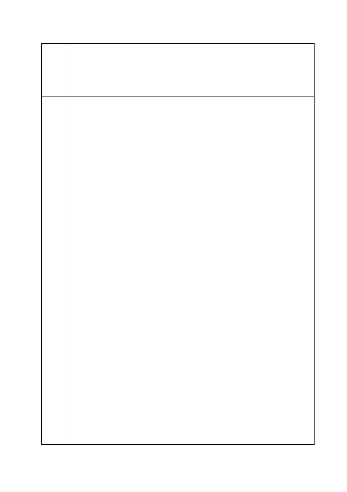

臺北市都市計畫委員會 公民或團體陳情意見綜理表
「變更臺北市信義區逸仙段二小段 33 地號等 21 筆土地（原臺北機廠）
案
名
工業區為創意文化專用區、特定專用區、道路及綠地用地主要計畫案」
及「擬定臺北市信義區逸仙段二小段 33 地號等 21 筆土地（原臺北機
廠）創意文化專用區、特定專用區、道路及綠地用地細部計畫暨劃定
都市更新地區計畫案」
訴求，共同守護珍貴的鐵道資產：
鴕鳥心態！即使改變爭議名稱，仍是包藏禍心的半吊子保存！
依照「都市計畫工業區檢討變更審議規範」，台北機廠要從工業用地
變更為特定專用區時必須捐贈 40％土地給台北市政府。而去年底開
啟審議流程後，引發爭論的焦點之一便是台北市文化局針對市府受贈
土地上的古蹟建築，提出「北美二館」的構想，甚至，在今年 1 月文
化部的公聽會上，文化局長劉維公仍打算比照各大「文創園區」慘案，
以「活化」列車車廂轉型為文創餐廳沾沾自喜。
將採光、通風良好的工業建築硬生生挪作需要控制光線和溫度的「美
術館」，此「創舉」引發各界一片嘩然和反彈，於是官方在歷次審議
中也逐一刪除計畫中的爭議字眼，將原訂「創意文化專用區」修改為
「台北機廠博物館特定專用區」、以「mega museum」取代荒腔走板
的「北美二館」，同時在規劃設計中限制了開發強度，將未來新增樓
物盡量朝廠區邊緣移動以求核心古蹟群的地景完整。
這樣的修正表面上看來是在總開發面積、建築量體、未來構想上做了
讓步以符合各界期待。但仔細深究，其實是該守護文史資產的文化
局、該為都市發展把關的都發局，雙雙妥協於對開發單位（臺鐵）欲
獲取更多開發利益的意念，而沒有積極作為。在第三次都市審議討論
會上，委員和市府單位花了許多時間鑽研高樓的配置，便有委員便直
言盡量將新建物往旁邊塞，以免引發民間團體不滿，試問，這種只是
為了閃躲爭議而調整的規劃方向，是哪門子鴕鳥都市設計？
再者，果官方的最終版本中，將「台北機廠博物館」的文化機能設定
為展演、教育、體驗、行政，而商業機能則為零售、餐飲、消費、娛
樂、會議等，那麼，為何 19 公頃園區中的既有建築無法滿足這些功
能，非得拆除現有建物另蓋 4～22 層的「支援性設施」不可呢？這些
多出來的新樓層要滿足多大的消費人口、如何不與松菸文創園區重
複？將為交通和週邊環境帶來何種衝擊、是否會因錯誤設計又砍樹造
路？在引發爭議後，開發單位在初始版本中的「住宅」用途雖然暫時
消失在後續版本中，但日後透過變更設計，是否會重演大巨蛋假體育
之名偷渡商業功能的慘劇？
我們認為，如果要回答上述問題，應該立即放慢審議的腳步，就台北
機廠的細緻功能進行更多明確的討論。而不是為模糊焦點，又或者是
任期不到半年的在位者急於替自己留下政績，敷衍地快速通過幾張
第 88 頁/共 154 頁